Observed October 13, 2026. Falmouth/Upper Cape weighted, with regional overlap. Captures include popups and incomplete media as encountered; they do not establish site-wide performance or motion quality. Google Maps rankings and social review counts were not audited. Walsh is a regional competitor with a Falmouth landing page, not a verified Falmouth office.
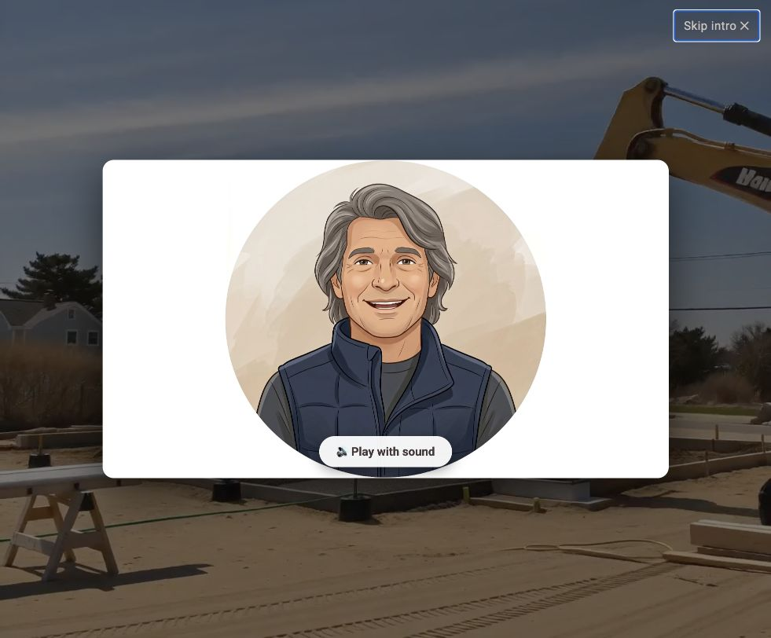
DC Builders ↗
East Falmouth; Cape/Islands · Owner-led broad residential
Visual: Animated initials/illustrated owner; Brown / cream; Roboto / Source Sans Pro.
Learn: Show real owner access. Avoid: Avoid animated avatar as credibility substitute.
Full observation
Hero: Intro over construction imagery. Navigation: Services, projects, consultation. Motion: Animated introduction and sound controls observed. CTA: Consultation / phone. Trust: Named owner, tenure and credential claims (self-reported).
Strength: Personal recognition. Familiar/weak element: Intro interrupts entry (creative judgment).
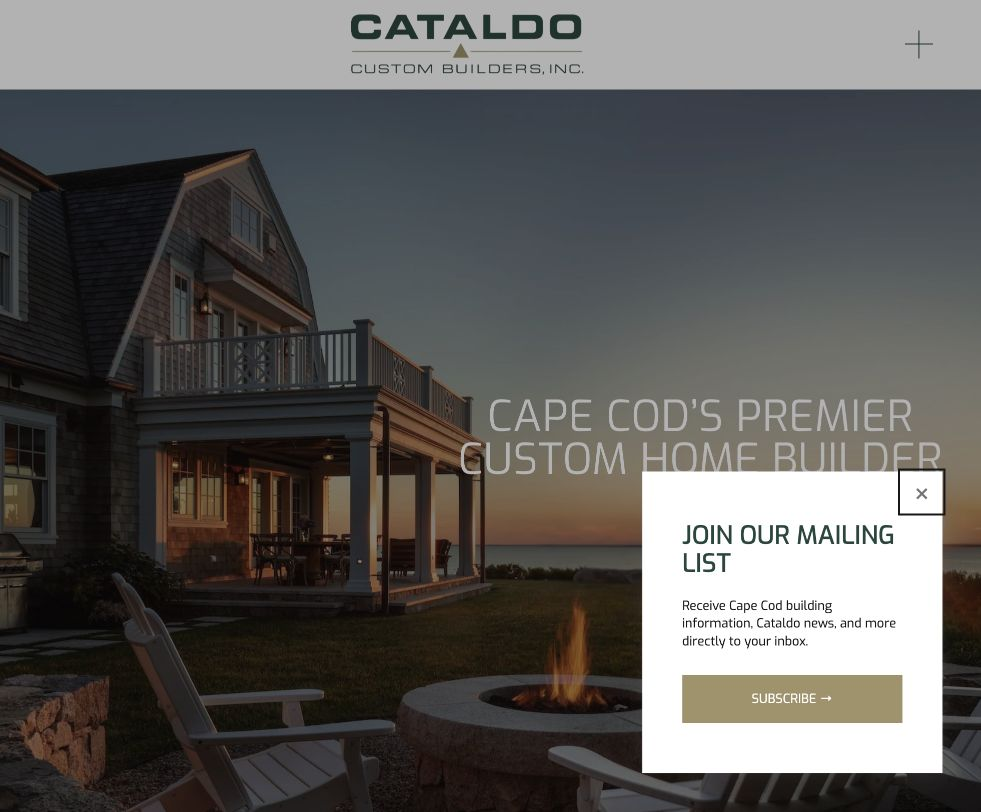
Cataldo Custom Builders ↗
East Falmouth; Cape Cod · Premium coastal custom homes
Visual: Geometric uppercase wordmark + triangle; Forest / olive / white; Exo.
Learn: Use fewer stronger images. Avoid: Avoid its triangle/wordmark construction.
Full observation
Hero: Waterfront dusk photograph. Navigation: Portfolio, company, services, inquire. Motion: Mailing-list popup observed; other motion untested. CTA: Inquire. Trust: Portfolio and estate-maintenance offer (self-reported).
Strength: Confident photography. Familiar/weak element: Premier/coastal language familiar (creative judgment).
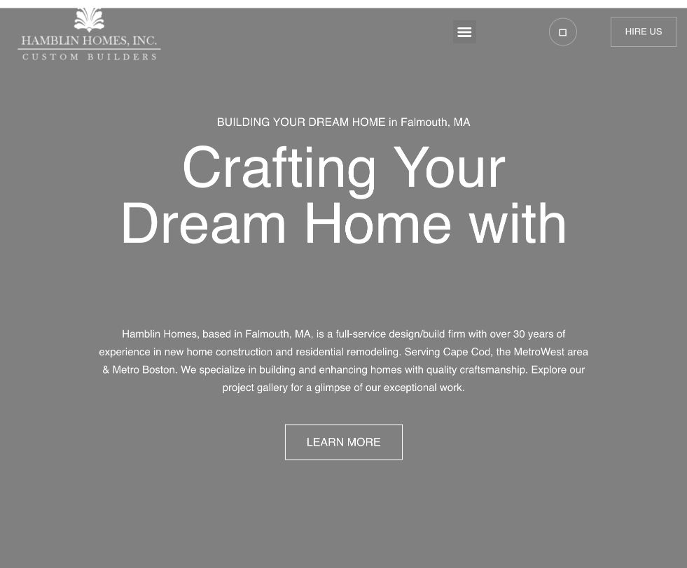
Hamblin Homes ↗
Falmouth; Cape/Boston overlap · Design-build residential
Visual: Fine serif wordmark / tree motif; Taupe / tan / white; Barlow.
Learn: Make scope easy to find. Avoid: Avoid copying longevity claims.
Full observation
Hero: Centered headline; media gray in capture. Navigation: About, services, interior/exterior portfolio. Motion: Background media not fully resolved; motion untested. CTA: Hire us. Trust: Named founder and experience claims (self-reported).
Strength: Direct residential service framing. Familiar/weak element: Dream-home copy and percentage bars (creative judgment).
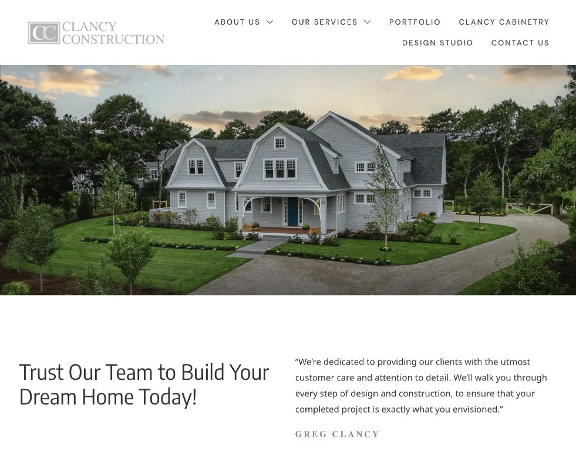
Clancy Construction ↗
Falmouth / Upper Cape · Broad design-build and related services
Visual: Architectural square emblem + serif; White / muted gray-purple; Noto Sans.
Learn: Separate image and message. Avoid: Avoid claiming equivalent in-house breadth.
Full observation
Hero: Large home image with separate text band. Navigation: Services, portfolio, studio, cabinetry. Motion: No conclusion about motion from static capture. CTA: Contact / portfolio. Trust: Team, awards and studio pages (self-reported).
Strength: Photo separated from readable copy. Familiar/weak element: Extensive navigation competes for attention (creative judgment).
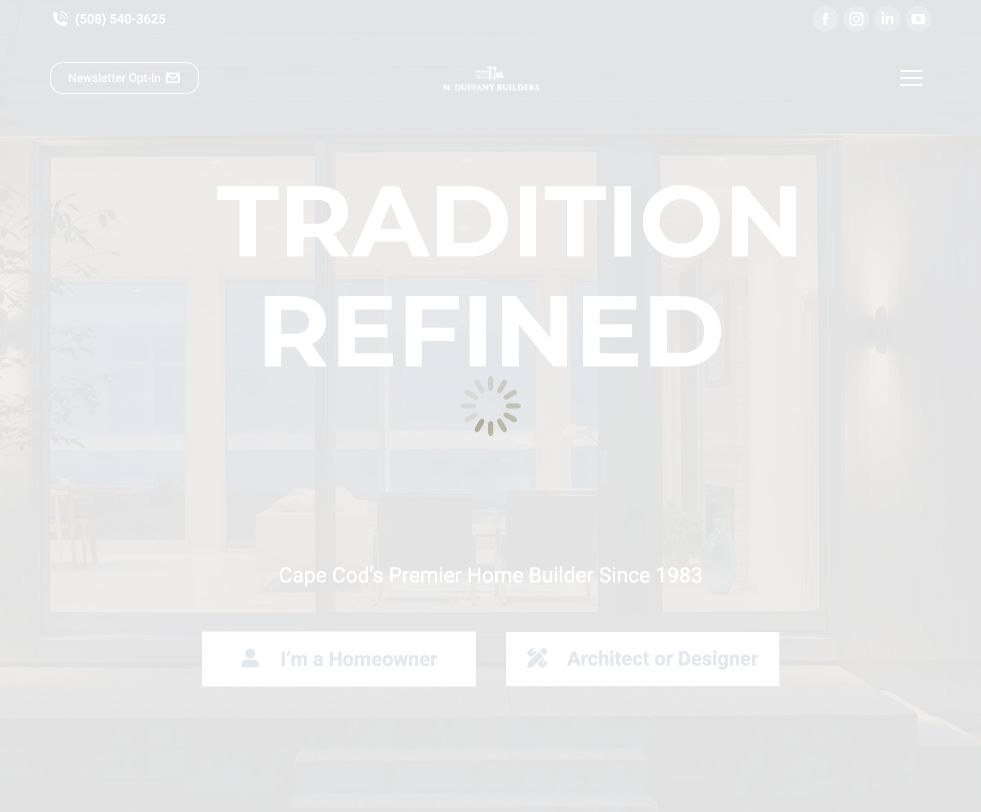
M. Duffany Builders ↗
Falmouth; Cape/Vineyard · Established construction and property care
Visual: Wordmark; fine detail unresolved in loader; Dark / white; accent uncertain; Roboto.
Learn: Route different audiences. Avoid: Avoid copying heritage narrative.
Full observation
Hero: Tradition-led headline; loader obscured image. Navigation: Services, company and work. Motion: Loading veil captured; motion quality unverified. CTA: Homeowner / property manager routes. Trust: History and team claims (self-reported).
Strength: Buyer role routing. Familiar/weak element: Hero cannot be fully assessed from capture (creative judgment).
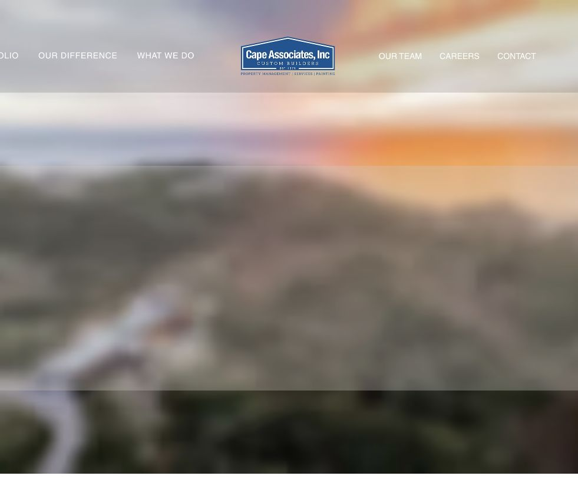
Cape Associates ↗
Cape-wide; Falmouth overlap · Scaled custom construction
Visual: Blue rectangular legacy nameplate; Blue / white / dark; Arial in sampled DOM; visual may use other fonts.
Learn: Credit collaborators in case studies. Avoid: Avoid borrowing their established reputation.
Full observation
Hero: Full-bleed coastal imagery. Navigation: Portfolio, difference, history, awards, contact. Motion: Soft/blurred media capture; timing untested. CTA: Contact. Trust: Credited portfolio and history (self-reported).
Strength: Project-led credibility. Familiar/weak element: Small header labels over image (creative judgment).
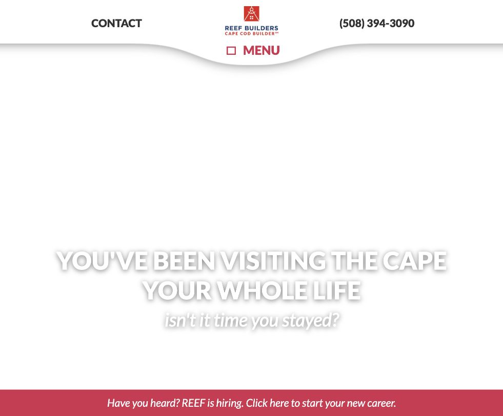
REEF ↗
Cape-wide; West Dennis · Custom design-build / education
Visual: Compact illustrated badge; Burgundy / white; Lato.
Learn: Answer practical planning questions. Avoid: Avoid unsourced guarantees or cost promises.
Full observation
Hero: Centered lifestyle headline; media absent in capture. Navigation: Menu, contact, projects and guides. Motion: Media unresolved; no smoothness claim. CTA: Phone / free guide. Trust: Process, volume and license claims (self-reported).
Strength: Planning guide helps early buyers. Familiar/weak element: Dream/lifestyle category language (creative judgment).
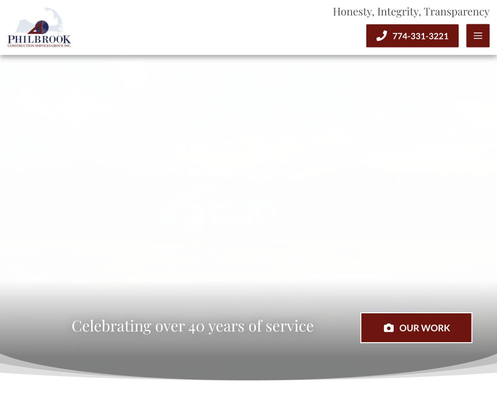
Philbrook Construction ↗
Dennis; Cape-wide · Established homes and remodeling
Visual: Serif wordmark + pictorial silhouette; Burgundy / white / warm gray; Playfair Display / Lato.
Learn: Use project-linked evidence. Avoid: Avoid unverified award badges.
Full observation
Hero: Anniversary line and work CTA; media incomplete. Navigation: Homes, renovations, kitchens/baths, work. Motion: Blank media area in initial capture. CTA: Our work / phone. Trust: Awards and family/veteran ownership claims (self-reported).
Strength: Clear heritage voice. Familiar/weak element: Small logo details at avatar scale (creative judgment).
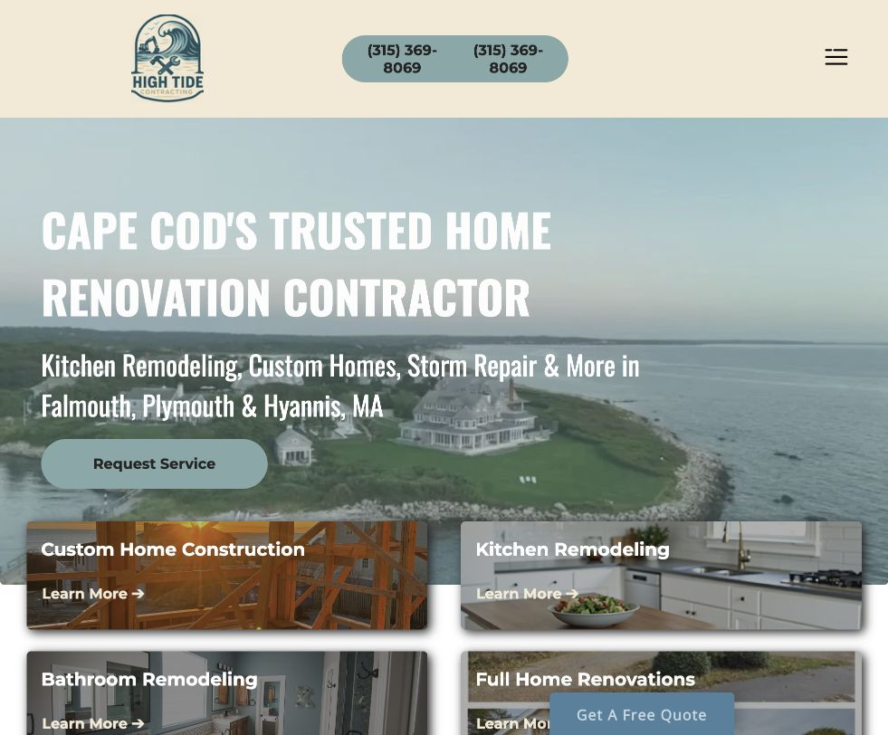
High Tide Contracting ↗
Falmouth / Plymouth / Cape · Broad renovation and repairs
Visual: Wave / round pictorial emblem; Muted teal / cream; Montserrat; condensed display appearance.
Learn: Clarify scope near the CTA. Avoid: Avoid nautical symbol imitation.
Full observation
Hero: Coast image with service cards. Navigation: Service-led grid and menu. Motion: Motion not established. CTA: Request service / quote. Trust: Coastal expertise and service claims (self-reported).
Strength: Quick scope recognition. Familiar/weak element: Many competing hero labels (creative judgment).
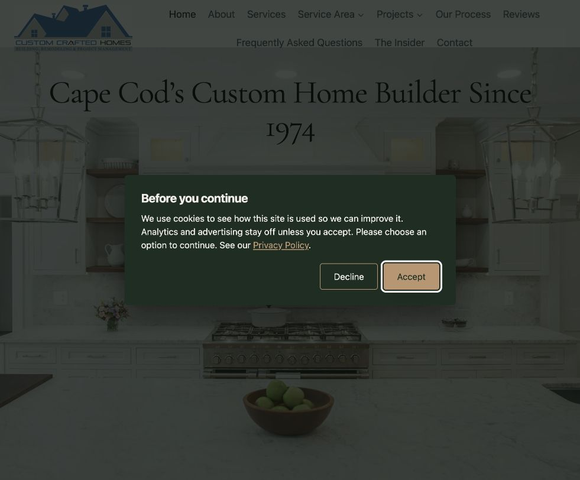
Custom Crafted Homes ↗
Dennis; Cape-wide incl. Falmouth · Family custom homes / renovation
Visual: House silhouette with name; Blue / cream / tan; Cormorant Garamond + system sans.
Learn: Readable light editorial surface. Avoid: Avoid reusing name/house device.
Full observation
Hero: Residential photograph / tenure headline. Navigation: Services, areas, projects, process. Motion: Consent modal observed; other motion untested. CTA: Projects / contact. Trust: Tenure and testimonials on site (self-reported).
Strength: Editorial serif with residential image. Familiar/weak element: Roof silhouette familiar (creative judgment).
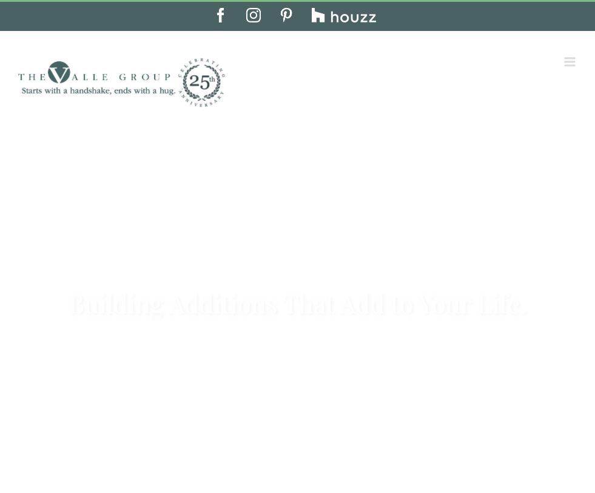
The Valle Group ↗
Falmouth / Cape · Residential and energy-efficient construction
Visual: Letter V / fine wordmark / anniversary seal; Muted green / white; PT Sans.
Learn: Explain a verified specialty. Avoid: Avoid implying passive-house capability.
Full observation
Hero: Light sparse frame; image unresolved. Navigation: Residential and service routes. Motion: Media incomplete in initial capture. CTA: Contact. Trust: Founding/local and efficiency claims (self-reported).
Strength: Clear specialty beyond visual branding. Familiar/weak element: Initial blank space obscures first impression (creative judgment).
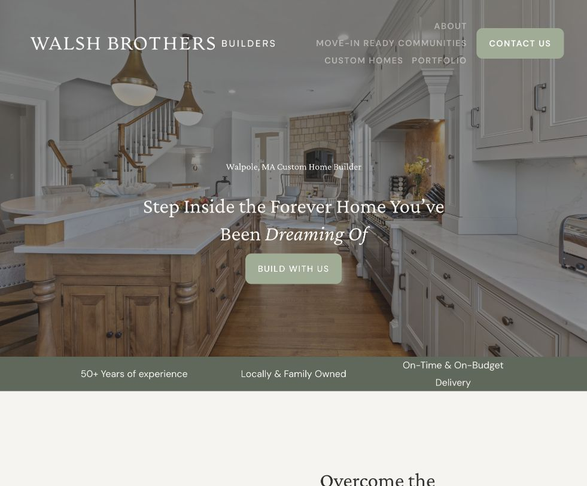
Walsh Brothers Builders ↗
Walpole base; Falmouth-targeting page · Luxury homes; regional search overlap
Visual: Refined serif wordmark; Sage / warm white / dark; Crimson Pro / DM Sans.
Learn: Use consistent type and CTA. Avoid: Avoid confusing regional overlap with local base.
Full observation
Hero: Interior photograph with centered serif. Navigation: About, process, portfolio, custom homes. Motion: Motion not established. CTA: Build with us. Trust: Experience and process claims (self-reported).
Strength: Coherent warm editorial treatment. Familiar/weak element: Luxury/dream-home copy familiar (creative judgment).
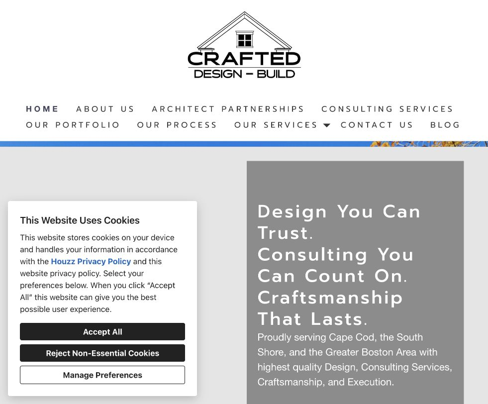
Crafted Design-Build ↗
Cape / South Shore / Boston · Design, consulting and remodeling
Visual: Roofline / window / bold wordmark; Black / white / blue accent; Prompt + system sans in sampled DOM.
Learn: Explain responsibilities plainly. Avoid: Avoid suggesting in-house architect without proof.
Full observation
Hero: Split media and text; cookie panel. Navigation: Services, partnerships, portfolio, process. Motion: Consent panel observed; motion untested. CTA: Contact. Trust: Project locations and testimonial sections (self-reported).
Strength: Process and consulting visible. Familiar/weak element: Dense uppercase navigation (creative judgment).
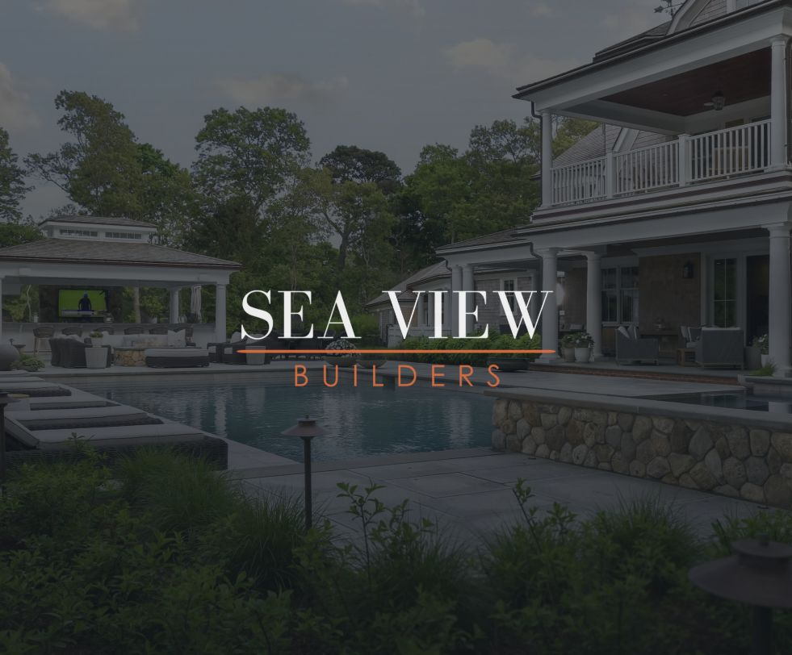
Sea View Builders ↗
Osterville; Cape incl. Falmouth · Premium custom residential
Visual: Large serif wordmark; White / copper / dark; Playfair Display / Jost.
Learn: Build a disciplined logo hierarchy. Avoid: Avoid copying serif/copper lockup.
Full observation
Hero: Full-bleed home with oversized centered brand. Navigation: Numbered menu / project routes. Motion: Motion untested. CTA: Begin conversation. Trust: Named project/team content in rendered site (self-reported).
Strength: Strong brand scale and quiet imagery. Familiar/weak element: Photography-dependent differentiation (creative judgment).